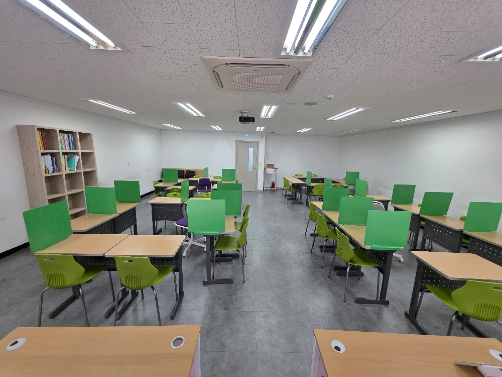
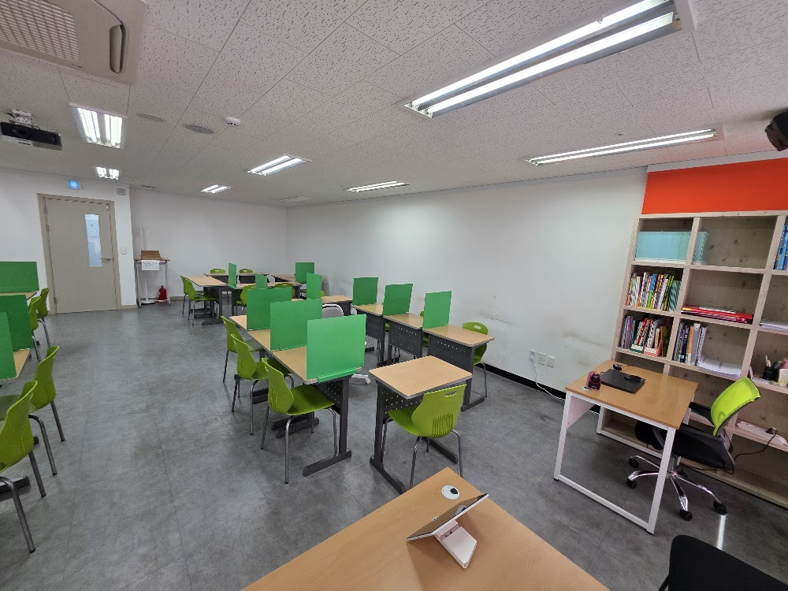
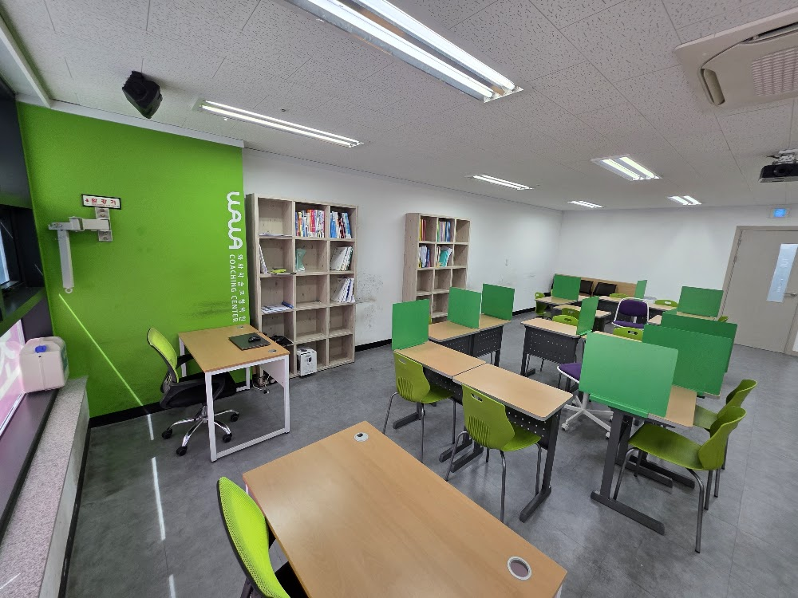

안녕하세요, 강서구 방화동 마곡 와와학습코칭 신방화점입니다. 오늘은 저희 센터가 가장 공들이는 부분 — 아이가 "모르겠어요"라고 말할 수 있는 교실에 대한 이야기를 전해드립니다.
가장 위험한 학생은 질문하지 않는 학생입니다
수업 중 조용히 앉아 필기만 잘하는 아이를 보면 학부모님은 안심하십니다. 하지만 저희가 가장 걱정하는 학생이 바로 그런 경우입니다. 모르는데 모른다고 말하지 않는 아이는, 어디서 막혔는지 아무도 알 수 없기 때문입니다.
많은 아이들이 질문을 못 하는 이유는 "이런 걸 물어보면 창피할까 봐"입니다. 그래서 신방화점은 수업 분위기부터 바꿉니다. 모른다고 말하는 것이 부끄러운 일이 아니라 당연한 일이 되도록요.

이렇게 질문을 끌어냅니다
"질문 있는 사람?"이라고 물으면 아무도 손을 들지 않습니다. 그래서 저희는 방법을 바꿨습니다.
- 정답을 묻지 않고 "이 문제 어떻게 풀었는지 설명해 볼래?"라고 묻기
- 설명하다 막히는 지점이 곧 그 학생의 질문이 됨
- 틀린 답을 말해도 "왜 그렇게 생각했어?"라고 먼저 물어보기
- 하원 전 "오늘 제일 헷갈렸던 것 하나"를 꼭 적게 하기
이렇게 하면 아이가 굳이 손들지 않아도, 코치 선생님이 그 아이가 어디서 막혔는지 알 수 있습니다.

모른다고 말한 순간부터 실력이 자랍니다
이번 주에도 한 중등 학생이 "사실 저 이 단원 처음부터 몰랐어요"라고 말했습니다. 그 말이 나오기까지 몇 주가 걸렸지만, 그 순간부터 코칭 방향이 완전히 달라졌습니다. 처음으로 돌아가 다시 시작했고, 지금은 스스로 문제를 풀어냅니다.
모르는 것을 인정하는 데는 용기가 필요합니다. 신방화점은 그 용기를 낼 수 있는 교실을 만들겠습니다. 방화동·마곡 학부모님들, 아이가 편하게 질문할 수 있는 곳에서 공부하게 해주세요.
와와학습코칭 신방화점 인근 학교
방화동·마곡 와와학습코칭(와와학습코칭 신방화점)은 인근 학교 학생들의 내신·수능을 함께 준비합니다. 아래 학교에 다니는 학생이라면 영어학원·수학학원·국어학원을 따로 찾을 필요 없이, 가까운 우리 센터에서 과목별 1:1 자기주도학습 코칭을 받을 수 있습니다.